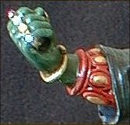
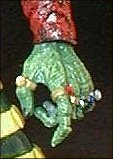
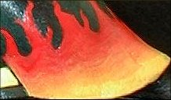
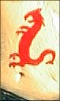

|
This custom was made from a Dark Cloud Lo Crouching, Hidden Dragon figure. I thought it was going to be mostly a repaint, but it took a little extra effort. The right gauntlet is from a He-Man wristband and a Ninja Spawn hand. The left reptilian hand is from an Ultima Online figure. The ring bands were made from small strips of thin rubber, and the stones are tiny rhinestones.


Much of the effort went into painting the details such as the flames and the tattoo:


This custom is an amalgamation of several of the many costumes worn by the Mandarin.
|